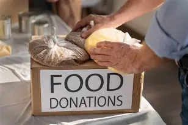
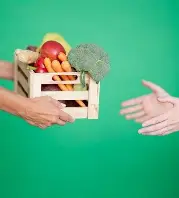

Welcome to Gauteng Community Food Support

Feeding families, building hope, and strengthening communities across Gauteng together.
See How We HelpWho We Are

Gauteng Community Food Support is a local non-profit organisation dedicated to ending hunger in our province. We provide nutritious food parcels, warm meals, and support to families facing food insecurity because no one in Gauteng should go hungry.
Food Parcels
Monthly grocery packs with essential staples delivered directly to registered households.
Community Kitchens
Hot, balanced meals served daily at central locations across Gauteng.
Get Involved
Volunteer your time or make a donation because every contribution makes a real difference.
Frequently Asked Questions
Contact us directly or visit our office during office hours to register. We'll assess your needs and add you to our programme.
Fill in our enquiry form, select "Volunteering", and we'll send you all the details about upcoming opportunities.
Absolutely! Contact us to arrange drop-off or collection. We accept non-perishable foods and fresh produce.
Our food parcels include a mix of non-perishable items like rice, maize meal, canned goods, and beans, plus fresh produce such as vegetables and fruit when available. We try to ensure every parcel provides balanced nutrition.
Registered households receive a food parcel once a month. Those facing extreme hardship or emergencies may qualify for additional support, so just speak to our team about your situation.
We are funded entirely by generous individuals, corporate sponsorships, and grant-making organisations. Every donation whether it is big or small it helps us keep serving our communities.
Our offices are closed on public holidays, but we do run special meal programmes duting important holidays to ensure no one goes without. Check our social media pages for updates.